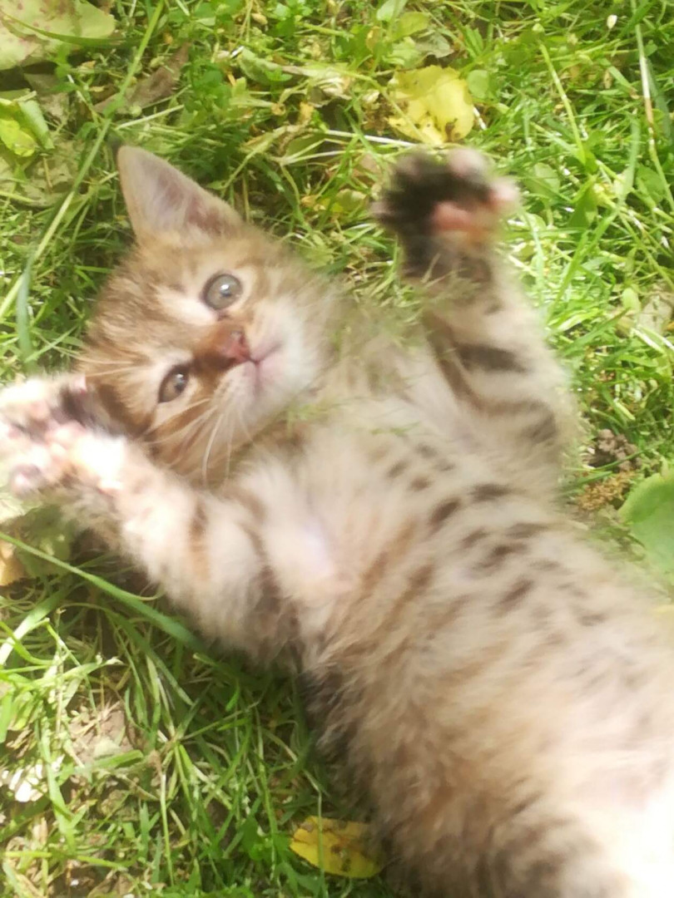

Что необходимо сделать коучу к лету?
Как известно, коучи это специалисты, которые пробуждают в своих клиентах осознанность, помогают жить максимально полно, ярко и проживать каждый момент жизни полно. А для того чтобы процесс коучинга с клиентом принёс больше результатов, необходимо быть ярким примером успешного, счастливого и гармоничного человека, являющегося полноценным автором своей жизни.
Лето, которое уже не за горами довольно активная пора, которая обычно нас сильно расслабляет. А как не расслабиться, когда 'солнце зовет, волна поёт, а мы такие загораем'. Но работа не дремлет и надо распределить время, силы и возможности так, чтобы хватило на все и ещё немножечко осталось.
Для того чтобы к осени не пришлось возвращаться в рабочий ритм, я предлагаю ознакомиться с напоминалками, которые сделают более насыщенной и яркой вашу жизнь и жизнь ваших клиентов.
-
Начните с подведения итогов и планирования следующего полугодия: что вы успели достичь, какие планы изменились, чего хочется добавить ещё в список?
-
Колесо баланса. Самое время повторить работу со своим колесом ( в качестве бонуса на странице моей анкеты можно найти видео из тренинга, которое поможет вам в заполнении) сверьте насколько восстановлен баланс в вашей жизни с начала года, что изменилось, в какую сторону, с чем ещё следует поработать?
-
Дневник благодарности. Пришла пора поблагодарить за уже достигнутые успехи. Поблагодарить за будущие достижения. А так же принять участие в тренинге благодарностей, который проводится в последние месяца каждого времени года (безоплатно).
-
Когда итоги подведены пришло время планировать будущее. Каким вы хотите видеть свое лето? Что вы хотите изменить, создать, достичь в ближайшие три месяца? Какой символ или метафору вы выбираете для своего лета?
-
Время личностного роста и развития. Коучи постоянно развиваются личностно и профессионально. Ведь каждый коуч знает, что важно быть чистым зеркалом для своего клиента. Для того чтобы открыть лучшее в подопеснлм необходимо обладать этими качествами и быть минимум на шаг лучше. И поэтому, каждое лето выстраивается очередь на курс "Коучинг. Не основы". Как думаете, может вам тоже стоит внести его в свое расписание? А если вы уже были на данном тренинг, тогда обязательно обратите внимание на тренинги "Невидимый коучинг" и "Внутренняя свобода".
-
А как вы смотрите на то, чтобы сделать свое лето, ещё и трамплином для новой высоты своего успеха в личной и профессиональной жизни? Что может стать для вас самым продвигающим выходом за рамки? Прыжок с парашютом, освоение нового творчества, путешествие в новую страну, восхождение на Эверест или решение наконец начать свое дело?
-
А может быть лето это повод создать свой личный сайт, чтобы ещё громче заявить о себе, как о коуче ещё более широкой аудитории.
-
Не забудьте про семью и друзей и яркие совместные мероприятия. Ведь время, которое мы выкладываем в наших родных и близких всегда окупается сторицей.
-
Запланируйте и осуществите удивительное путешествие. Какие города вы хотите увидеть? Какую страну посетить? Какой континент для себя вы планируете открыть? А может вы совершите путешествие к самому себе?
-
Напишите список своих 100 желаний. Попробуйте ежедневно выбирать из списка по одной записи и исполнять их. Выберите одну большую мечту и осуществите её за лето.
-
Разработайте для своих клиентов новую коучинговую программу, например, "100 дней для уверенного достижения целей" ( список еще 25 программ будут выложены в следующей статье)
-
Прочитайте, как минимум, три книги. Одну профессиональную и две для души. Выберите те, которые все время откладывали и ни как не взяли прочитать.
-
Освойте новые полезные навыки, например, техники мнесоники, скорочтения или ментальной арифметики. Эти навыки обязательно принесут свои плоды в довольно короткие сроки.
-
Напишите несколько постов о своей жизни, поделитесь своими мыслями и впечатлениями. Покажите своим клиентам, свой потенциал и возможности, что вы не только коуч, но и человек с насыщенной жизнью.
-
А вот если бы вы писали статью, какую бы рекомендацию вы дали бы самому себе?
А теперь берите свои ежедневники или планеры и поскорее внесите туда грандиозные и вдохновляющие планы. Только представьте, какой становится ваша жизнь, когда вы, как настоящий режиссёр создаете самый лучший фильм и сценарий своей жизни с яркими, ценными, насыщенными моментами и поворотами событий.
А что станет вашими первыми шагами, в ближайшую неделю, по воплощению этих планов?